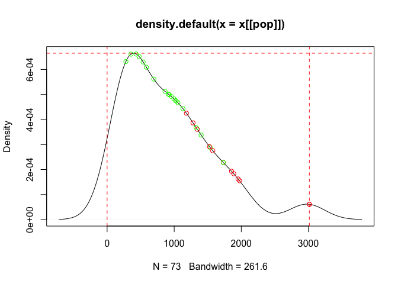

Studies that evaluate survey sampling and analysis approaches require varied techniques and methods not found in a single package in R. This package provides utilities that aid and simplify these approaches to enable streamlined assessment and comparison of different survey sampling and analysis techniques.
This package has been developed in support of a Medecins Sans Frontieres UK study on the impact of probability proportional to population size (PPS) sampling on health and nutrition surveys particularly in contexts of humanitarian emergencies.
Installation
surveysampler is not yet available from CRAN but the development version is available from GitHub and can be installed with:
if (!require(remotes)) install.packages("remotes")
remotes::install_github("ernestguevarra/surveysampler")Usage
Recreate an unweighted survey sample from a probability proportional to population size (PPS)-drawn dataset
Given a dataset from a typical health and nutrition survey with a sample that has been drawn using probability proportional to population size (PPS) and a dataset consisting of all the potential sampling units with their population sizes from which the survey sample was taken, we develop two approaches to recreate an unweighted survey sample. Such approaches allow for the use of readily available PPS-drawn datasets in studies that aim to test the impact of PPS samples on health and nutrition indicators measurement.
Acceptance-rejection algorithm
Using the probability density of the populations of all the potential sampling units from which a specific survey sample was drawn from, we accept or reject a sampling unit from the survey sample if it matches the probability density of the populations of potential sampling units. The idea here is that we pick sampling units that we might get from a random or systematic sample of potential sampling units.
We developed the function accept_reject_sample() for this purpose. The function requires two datasets:
- a full list of potential sampling units with their populations such as the one below
village_list
#> # A tibble: 73 × 4
#> id village population cluster
#> <dbl> <chr> <dbl> <chr>
#> 1 1 BODO FOUDA 1732 1
#> 2 2 BODO GOUALGA 1974 3
#> 3 3 BODO GUEFTAGUE 1888 4
#> 4 4 DJIMTILO 309 <NA>
#> 5 5 BLOUMTAGUE 298 <NA>
#> 6 6 NANAMI 433 5
#> 7 7 LAFIA 1 846 <NA>
#> 8 8 LAFIA 2 211 <NA>
#> 9 9 LAFIA CKRENACK 117 <NA>
#> 10 10 MESSIO 915 6
#> # … with 63 more rows- a survey dataset drawn via PPS from the full list of potential sampling units such as the one below
sample_data
#> # A tibble: 407 × 11
#> surveydate psu sex birthdate age weight height oedema muac measure
#> <date> <int> <int> <date> <int> <dbl> <dbl> <int> <int> <chr>
#> 1 2020-12-16 18 2 NA 6 6.9 65 0 144 l
#> 2 2020-12-16 16 1 2020-05-22 6 7.8 65.6 0 140 l
#> 3 2020-12-19 13 2 2020-05-26 6 5.2 62.6 0 131 l
#> 4 2020-12-19 3 2 2020-06-19 6 7 69.1 0 133 l
#> 5 2020-12-19 15 2 2020-06-13 6 5.4 62.4 0 127 l
#> 6 2020-12-20 14 1 NA 6 7.1 66.3 0 152 l
#> 7 2020-12-20 9 1 2020-05-23 6 7.1 65.5 0 123 l
#> 8 2020-12-23 30 2 NA 6 8.5 63.2 0 168 l
#> 9 2020-12-23 24 1 2020-06-04 6 8.5 68.6 0 161 l
#> 10 2020-12-18 4 2 2020-05-03 7 7.5 68.2 0 148 l
#> # … with 397 more rows, and 1 more variable: clothes <chr>The function can be used as follows:
accept_reject_psu(
x = village_list,
svy = sample_data,
psu = c("id", "psu"),
match = "cluster",
pop = "population",
verbose = FALSE,
show_plot = TRUE
)and returns a plot of the accepted and rejected samples against the probability density of the populations, and the simulated unweighted survey sample like below:

#> # A tibble: 391 × 11
#> surveydate psu sex birthdate age weight height oedema muac measure
#> <date> <dbl> <int> <date> <int> <dbl> <dbl> <int> <int> <chr>
#> 1 2020-12-20 2 2 NA 14 8 74.9 0 129 l
#> 2 2020-12-20 2 2 2019-05-07 19 11.4 82.7 0 150 l
#> 3 2020-12-20 2 1 2019-01-12 23 9 78.1 0 122 l
#> 4 2020-12-20 2 2 2017-08-28 39 13.1 94.4 0 153 h
#> 5 2020-12-20 2 1 2017-02-09 46 14.5 97.6 0 157 h
#> 6 2020-12-20 2 2 NA 48 17.1 102. 0 179 h
#> 7 2020-12-19 2 2 2016-01-05 59 15.1 105. 0 159 h
#> 8 2020-12-19 2 2 NA 59 17.8 107. 0 164 h
#> 9 2020-12-18 5 1 2019-12-08 12 8.8 74.4 0 147 l
#> 10 2020-12-18 5 1 2019-10-01 14 7.8 74.9 0 136 l
#> # … with 381 more rows, and 1 more variable: clothes <chr>Propensity score matching
Using a dataset of all potential sampling units and their population sizes from which a specific survey sample was drawn from, we draw a simple random sample or a systematic sample and then match with the survey sample based on propensity scores of their population sizes. The simulated survey sample is then created from sampling units from the survey sample that have been directly selected or that match the potential sampling units that are not in the survey sample.
We developed the function create_sample_psm() for this purpose which can be used as follows:
create_sample_psm(
x = village_list,
svy = sample_data,
psu = c("id", "psu"),
match = "cluster",
pop = "population"
)and returns a simulated unweighted survey sample like below:
#> # A tibble: 254 × 11
#> surveydate psu sex birthdate age weight height oedema muac measure
#> <date> <int> <int> <date> <int> <dbl> <dbl> <int> <int> <chr>
#> 1 2020-12-19 13 2 2020-05-26 6 5.2 62.6 0 131 l
#> 2 2020-12-19 3 2 2020-06-19 6 7 69.1 0 133 l
#> 3 2020-12-19 15 2 2020-06-13 6 5.4 62.4 0 127 l
#> 4 2020-12-20 9 1 2020-05-23 6 7.1 65.5 0 123 l
#> 5 2020-12-23 24 1 2020-06-04 6 8.5 68.6 0 161 l
#> 6 2020-12-18 10 1 NA 7 6.9 69 0 119 l
#> 7 2020-12-22 29 2 2020-05-10 7 6.3 63.6 0 127 l
#> 8 2020-12-22 29 2 2020-04-24 7 7.4 66.6 0 134 l
#> 9 2020-12-22 32 1 NA 7 7.7 64.7 0 156 l
#> 10 2020-12-23 24 2 2020-05-17 7 6.5 63.2 0 140 l
#> # … with 244 more rows, and 1 more variable: clothes <chr>Citation
If you find the surveysampler package useful please cite using the suggested citation provided by a call to the citation function as follows:
citation("surveysampler")
#> Warning in citation("surveysampler"): no date field in DESCRIPTION file of
#> package 'surveysampler'
#>
#> To cite package 'surveysampler' in publications use:
#>
#> Mark Myatt and Ernest Guevarra (2021). surveysampler: Survey Sampling
#> and Analysis Tools. R package version 0.0.0.9000.
#> https://github.com/ernestguevarra/surveysampler
#>
#> A BibTeX entry for LaTeX users is
#>
#> @Manual{,
#> title = {surveysampler: Survey Sampling and Analysis Tools},
#> author = {Mark Myatt and Ernest Guevarra},
#> year = {2021},
#> note = {R package version 0.0.0.9000},
#> url = {https://github.com/ernestguevarra/surveysampler},
#> }License
The surveysampler package is distributed under the GPL-3 license.
Community guidelines
Feedback, bug reports and feature requests are welcome; file issues or seek support here. If you would like to contribute to the package, please see our contributing guidelines.
Please note that the surveysampler project is released with a Contributor Code of Conduct. By contributing to this project, you agree to abide by its terms.